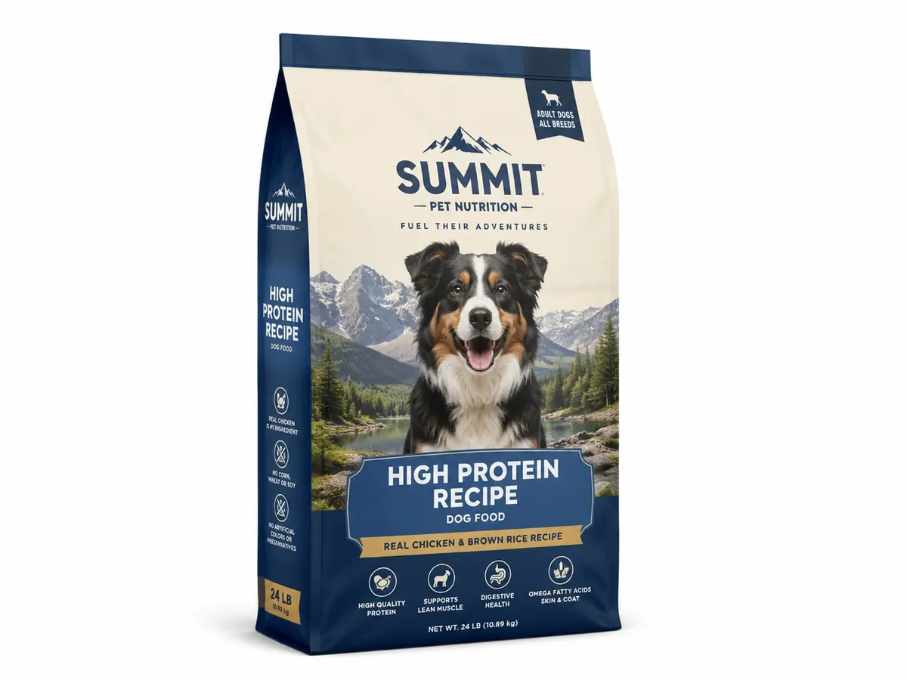

Dog Food Flat Bottom Bags — factory-direct from Shenzhen with MOQ 500 PCS, 24-hour RFQ response, free dielines and worldwide shipping. Custom size, materials (Kraft or white cardboard 250–400 gsm, corrugated E-flute optional, food-safe coatings), printing and finishes; sampling in 5–7 days after artwork approval.
Custom dog food flat bottom bags combine a stable base with front, back, side-gusset and bottom panels for branding. Buyers should select the structure from the actual fill weight, kibble shape, fat and aroma profile, shelf-life target, zipper use and transport conditions.
BestPackFactory supports B2B pet food packaging projects from MOQ 500 PCS. Final materials and test criteria are confirmed during sampling with the intended product rather than assigned from a generic bag specification.
| Business Model | B2B RFQ only, no retail checkout |
| MOQ | 500 PCS |
| Customization | Size, material, logo, color, finish, insert, barcode, QR code |
| Best For | Brands, wholesalers, distributors, ecommerce sellers and private label buyers |
| Contact | Sales Manager: Lisa Wu Email: lisa@colorprintingpackage.com WhatsApp +86 158 8653 0985 |
For a comparable quotation, provide the intended dog food weight, product density, desired zipper or slider, carrying feature, target shelf life, artwork status and packed-carton requirements.
Email For Quote WhatsApp LisaThe table below is written for industrial RFQ comparison. Final production specification is confirmed by sample approval, filling test and export packing test.
| Recommended material structure | Project-specific laminate or mono-material option selected from product, barrier, sealing and destination requirements |
|---|---|
| Total laminate thickness | Confirmed after fill-weight, puncture, seal and handling tests |
| Oxygen barrier OTR | Target agreed from product fat content, aroma sensitivity and required shelf life; test method confirmed per project |
| Moisture barrier WVTR | Target agreed from product moisture sensitivity, storage conditions and required shelf life |
| Seal strength | Acceptance target established during filled-sample and production approval |
| Zipper type | Press-to-close or slider options selected and tested against intended fill weight |
| Puncture resistance target | Confirmed with representative kibble or product during sample testing |
| Bag style | Flat bottom pouch, quad seal bag, stand-up pouch with handle hole optional |
| Drop test | Filled-pouch drop protocol agreed from pack weight, distribution route and carton packing |
| Surface finish | Matte, gloss, anti-scratch matte, spot UV window or logo |
| MOQ | 500 PCS per custom size / artwork |
| Artwork file | AI / PDF / PSD accepted; vector logo required; 3 mm bleed |
| Color tolerance | Compared with the approved proof or signed color standard |
| Dimension tolerance | Confirmed on the approved specification and production sample |
| Quality inspection | Inspection scope and acceptance criteria agreed in the purchase specification |
| RFQ data required | Size, product weight, filling condition, artwork, quantity, destination port/country |
| Product | Dry kibble, freeze-dried food, treats or supplement; include fat, aroma and sharp-edge considerations |
|---|---|
| Pack format | Flat bottom, quad seal or stand-up pouch selected from fill weight, shelf display and filling method |
| Closure | Press-to-close zipper, slider, handle or other feature tested with the intended pack weight |
| Approval | Filled sample checks for volume, seals, zipper, puncture, drop behavior and carton packing |
For broader sourcing guidance, visit the pet food packaging supplier hub or compare the complete pet food bag range.
Provide fill weight, product dimensions or target bag size, fat and aroma considerations, shelf-life target, zipper and handle requirements, artwork, quantity and destination country.
A flat bottom structure provides a broad base and multiple printable panels. Suitability depends on the intended fill weight, shelf presentation, filling method and transport testing.
Approve fill volume, seal and zipper performance, puncture resistance, handle usability where applicable, print rub, drop behavior and export-carton packing with the intended product.
Click below to contact us quickly by WhatsApp or email. We can help with dieline, samples, printing, materials and worldwide shipping.
💬 Chat on WhatsApp ✉ Email Inquiry lisa@colorprintingpackage.comMOQ is 500 PCS per custom size and artwork. Sample orders can be arranged first so you can approve structure, printing and finish before mass production.
Dieline and artwork proof within 24 hours. Physical samples typically 5–7 working days after artwork confirmation.
Yes. We provide free dielines and structural design support based on your product dimensions before you place an order.
We quote FOB Shenzhen, CIF, EXW and DDP. Freight is calculated by destination country, quantity and packing method.
Send your product dimensions and quantity to lisa@colorprintingpackage.com or message us on WhatsApp — we reply within 24 hours.